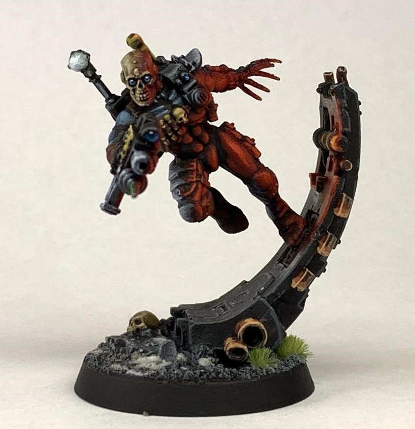

Catalan to Greek translator
Built with pytorch-lightning and the t5 topology. Catalan and Greek parallel dataset scraped from Opus Corpus.
Γεια σας! This is my website
Who am I?
I'm a Catalan Telecommunications Engineer turned Data Scientist. In my professional life I enjoy implementing cool Machine / Deep Learning techniques, give PEP-8 compliant feedback to your PRs and learn to use new technologies I find on my career path. In my free time I do lots of cool stuff too, such as writing up this portfolio page
During my academic life I have had a strong focus on programming courses, digital signal processing and machine learning competences that helped me develop the capacity to tackle engineering problems with ease. This reflects on an open-minded tech-agnostic mentality that allows me to push forward regardless of the situation.
I have been working in several industry projects where I have been able to hone my skills in a very broad range of Data Science use cases. I started with computer vision tasks back in 2018 with object recognition tasks while at UPC. Taking my fundamentals from signal processing and Pattern Classification courses I started working with the classic ML techniques (KNN, Fuzzy Logic, SVMs, NN, Decision Trees, K-means, Ensemble methods, etc) in both my university life and some private Kaggle competitions.
Following that base came my industry experience working with statistical modeling, time series forecasting, outlier detection and clustering. Nowadays I've been mostly working with NLP projects and some computer vision tasks. Leveraging the strength of the transformers architecture to deliver high-performing LLM-based products to tackle pretty much every single possible use case existing in the state of the art. Information retrieval, semantic similarity, question answering, text classification, text generation, the list goes on...
Built with pytorch-lightning and the t5 topology. Catalan and Greek parallel dataset scraped from Opus Corpus.
Simple launcher to quickstart Data Science development with everyone's favourite IDE.
Some notebooks to understand how the technology revolutionizing AI works
Simple OOP Project with data gathering, ETL and forecasting
On your left: photographic evidence of such feat
Open to comissions btw
|  | ||
Email me |
| alex.eslava96@gmail.com |